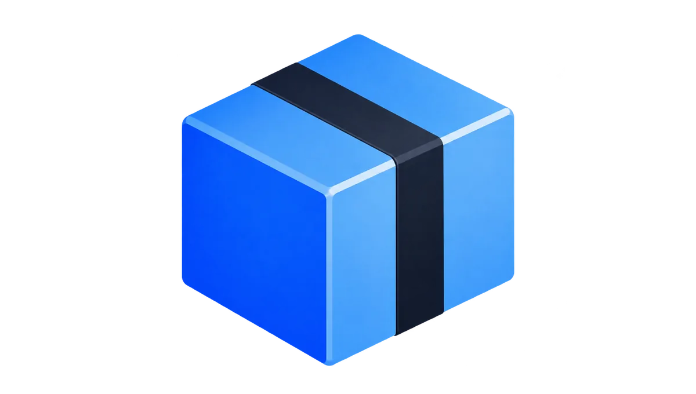
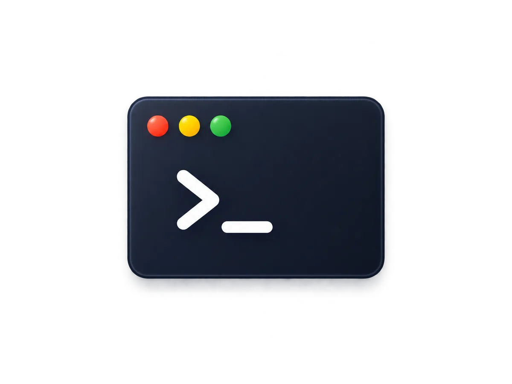
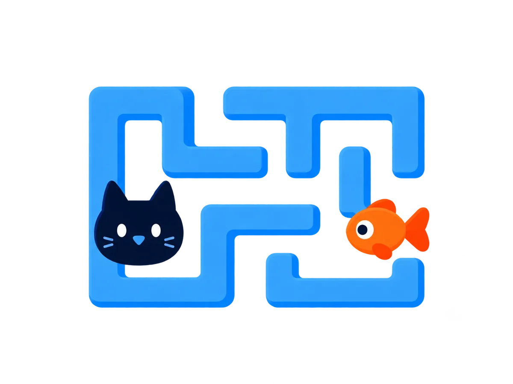

作品
为日常创造更顺手的工具。
01 / 精选作品MDViewv3.4.3轻量的 Markdown 阅读与编辑工具。
PlainMintv0.6.1打开就写、轻松整理的纯文本编辑器。
QZipv2.0.2免费无广告的压缩与解压工具。

DSH-Desktopv0.4.2管理 DeepSeek Harness 的桌面启动器。
pptx-refactorv0.3.0将图片型 PPT 重构为可编辑演示文稿。 agent-md-wizard版本 —向导式生成或更新仓库 AGENT.MD。 cat-maze-adventure版本 —带小猫收集鱼干、探索迷宫的小游戏。
frog-hop版本 —为儿童设计的青蛙跳跃小游戏。文章
记录思考、分享经验，也为更好的创作做准备。